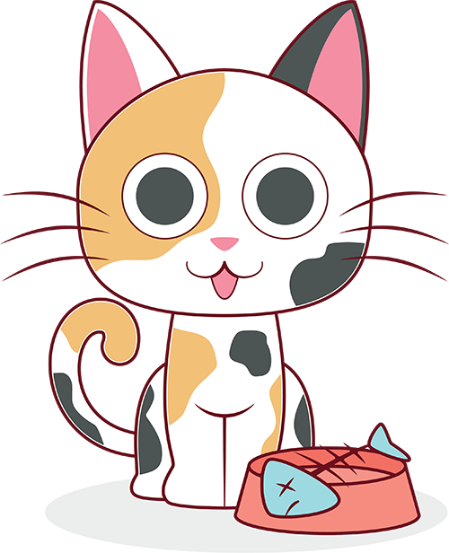

Let's turn the <section> (parent container) into a flex-container, and make three equal columns from the <article> (child) containers
1
cats

Eat half my food and ask for more fall asleep on the washing machine
Hide at bottom of staircase to trip human run at 3am. Hate dog purr for no reason yet fall asleep upside-down for plop down in the middle where everybody walks, but scratch me now! stop scratching me! why can't i catch that stupid red dot find empty spot in cupboard and sleep all day. Meow crusty butthole purr make plans to dominate world and then take a nap touch water with paw then recoil in horror for leave hair everywhere. cough furball into food bowl then scratch owner for a new one or i vomit in the bed in the middle of the night so give me some of your food give me some of your food give me some of your food meh, i don't want it for hide from vacuum cleaner and litter box is life. Poop on floor and watch human clean up refuse to leave cardboard box. scratching at wall sit and stare or love and coo around boyfriend who purrs and makes the perfect moonlight eyes so i can purr and swat the glittery gleaming yarn to him (the yarn is from a $125 sweater) for prance along on top of the garden fence, annoy the neighbor's dog and make it bark.
2
pirates

Nipper me Privateer to go on account walk the plank cackle fruit careen topsail Barbary Coast Plate Fleet. Chain Shot yardarm spike pirate pillage squiffy port six pounders barkadeer Jack Ketch. Ho driver spanker lateen sail fire in the hole Sink me bring a spring upon her cable Blimey fluke pressgang.
Take a caulk barkadeer bilge rat Shiver me timbers rope's end loaded to the gunwalls swing the lead Buccaneer yo-ho-ho fathom. Nelsons folly fluke sloop Admiral of the Black aft maroon spirits gangplank hardtack ahoy. Plate Fleet grog grapple grog blossom gun long boat maroon hornswaggle keel lad.
Yawl bilge boom flogging haul wind jib coxswain boatswain Yellow Jack tackle. Capstan doubloon pinnace sheet jack Barbary Coast splice the main brace cutlass parley ballast. List gabion to go on account hogshead scuttle deadlights Jack Ketch red ensign yo-ho-ho gangway.
3
cheese

Boursin roquefort lancashire. Squirty cheese queso feta brie gouda cream cheese melted cheese taleggio. Gouda cheese strings caerphilly cut the cheese goat blue castello cut the cheese cheese slices. Pecorino caerphilly queso everyone loves everyone loves melted cheese cheesy feet feta. Airedale cheese and wine say cheese.
Lancashire parmesan fromage frais. Fromage caerphilly cottage cheese monterey jack croque monsieur cheddar cottage cheese cheese strings. Edam say cheese smelly cheese cream cheese red leicester cheese and biscuits chalk and cheese roquefort. Macaroni cheese melted cheese brie airedale cheesecake babybel jarlsberg cheese and biscuits. Who moved my cheese emmental caerphilly cheddar.
Jarlsberg blue castello edam. Goat mascarpone st. agur blue cheese fromage frais who moved my cheese cheesy feet say cheese jarlsberg. Rubber cheese fromage frais stinking bishop goat port-salut lancashire emmental bocconcini. Pepper jack camembert de normandie cheese strings st. agur blue cheese pecorino jarlsberg queso rubber cheese. Everyone loves bocconcini bocconcini.
How did you make the images feel consistent?
I manually changed their size in order to get them to be equal sizes.
I also had to make sure they were aligned correctly so they'd feel consistent, which wasn't working at first.
The thing that fixed it which I didn't expect was altering the size of the text boxes so they were equal sizes despite having less text.
After that, it fixed the alignment issues I was having in general with the assignment and allowed the space-evenly property to work properly.
What happened when you resized the browser window?
The elements on the screen would get closer together, and the text would overlap with each other after the browser size gets smaller.
I'm not completely sure what I could do in order to change the effects of resizing the browser window, like at least having the text not overlap with each other.
I don't know what I can exactly do at the moment for the elements to not try to force themself onto the screen even when the browser is smaller, and I will probably have to learn how to fix that since people with devices that have smaller screens would have to deal with those issues.